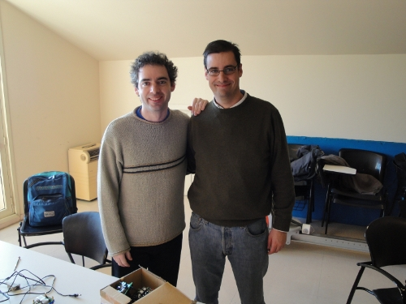
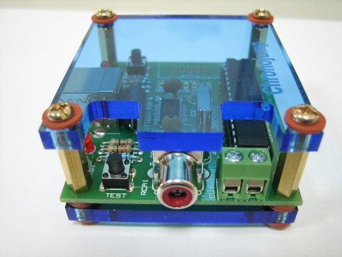
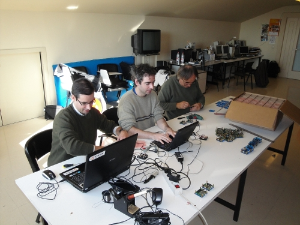

El pasado jueves 28 de Enero hice un viaje relámpago a Barcelona para visitar a Xavier de Blas y ayudarle en el proyecto Chronojump. Había fabricado 500 tarjetas Chronopic en Taiwán, pero el bootloader no estaba cargado por lo que no se podía descargar el firmware.

Me llevé un par de Skypics para usarlas como grabadoras con el programa Pyburn. El inconveniente era que había que quitar la parte superior de metacrilato de la Chronopic, sacar el PIC, insertarlo en la Skypic y grabarlo (El conector de grabación ICSP de la Chronopic no está soldado).

En total grabamos y dejamos listas unas 160 placas. Estuvimos en el Tech Lab de Josep María Padullés en el Institut Nacional d'Educació Física de Catalunya (INEFC). En la foto estamos, de derecha a Izquierda, Jose maría, Xavi y yo. Además, varios estudiantes nos estuvieron ayudando (Aldo Tuya, Anna Padullés, Carlos (Conan), Helena Olsson y Raúl Bescós ) . ¡Muchas gracias!
A Xavi no lo veía desde la lectura de mi tesis. Nos vemos poco, pero los encuentros son muy productivos 😉